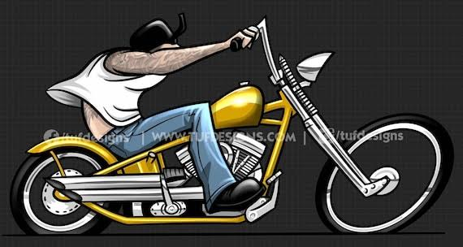
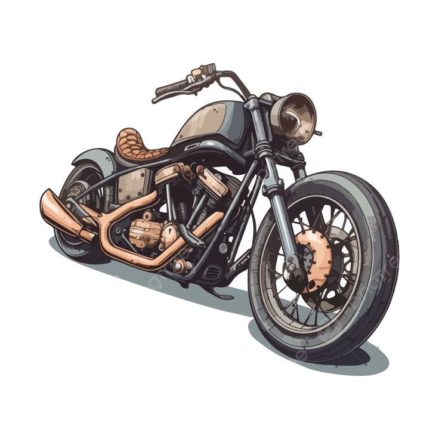

El amor sobre dos ruedas
Wilfredo Ollero Romero
La historia de la motocicleta comenzó en el siglo XIX. En 1885, los inventores alemanes Gottlieb Daimler y Wilhelm Maybach desarrollaron un vehículo de dos ruedas con motor de combustión interna, considerado uno de los primeros pasos en la creación de la motocicleta moderna. Con el paso de los años, las motos evolucionaron en diseño, potencia y tecnología hasta convertirse en uno de los medios de transporte más populares del mundo.

Las motocicletas representan libertad, aventura y pasión por la velocidad. Existen diferentes tipos, como las deportivas, ideales para los amantes de la potencia; las urbanas, perfectas para desplazarse por la ciudad; y las todoterreno, diseñadas para explorar caminos difíciles. Cada modelo ofrece características que se adaptan a las necesidades y gustos de cada conductor.
Disfrutar de una moto también implica responsabilidad. Utilizar casco, respetar las señales de tránsito y realizar un mantenimiento periódico son medidas esenciales para conducir con seguridad. En este blog encontrarás información sobre modelos populares, consejos de mantenimiento y novedades del motociclismo para descubrir todo lo que ofrece este apasionante mundo. ¡Enciende el motor y disfruta de la aventura sobre dos ruedas!